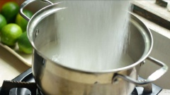
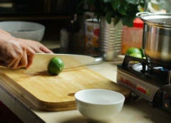
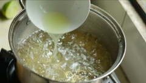
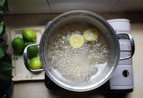
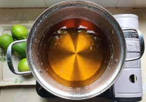
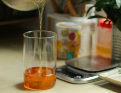
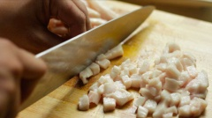
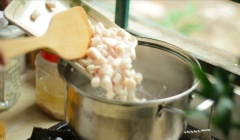
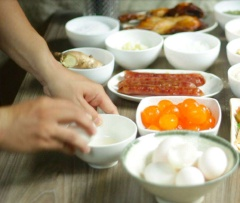

1.
NƯỚC ĐƯỜNG: Cho đường cát vào 500ml nước đang sôi. Tiếp tục đun ở lửa nhỏ cho đến khi đường hoà tan

2.
Chanh vắt nước và sử dụng cả phần vỏ. Khi hỗn hợp bắt đầu sôi, cho nước cốt chanh và cả phần vỏ chanh vào. Lưu ý khi cho vỏ chanh, nhớ cho phần mặt cắt hướng lên, để các múi chanh không rơi vào nước đường nhé. Mặt khác khi vắt chanh cũng không đước bóp quá mạnh, làm tinh dầu trong vỏ ra nhiều, có thể làm nước đường bị đắng. Bạn nào kỹ cũng có thể rửa lại và lau khô phần vỏ chanh sau khi vắt



3.
Đun cho đến khi hỗn hợp bắt đầu chuyển sang màu cánh ván tiến hành tắt bếp và để thật nguội trước khi cho vào lọ. Lưu ý, khi hỗn hợp bắt đầu sôi, cũng như sau khi nấu, không được đảo, khoáy để tránh tình trạng bị lại đường nhé. Hãy giữ nước đường khoảng 10-15 ngày để đường lên màu cũng như ổn định đường trước khi làm bánh.


4.
Nước đường như thế nào là đạt? dùng 1 chén nước trong, khi đường bắt đầu chuyển sang màu cánh ván, cho 1 giọt đường vào vào nước, nếu đường hoà tan luôn vào nước thì tiếp tục nấu. Nếu đường rớt xuống đáy, không hoà tan nhưng không tạo thành viên tròn là nước đường đã đạt.
5.
Nếu đun nước đường quá lửa thì xử lý thế nào? trong trường hợp sau khi thử, đường bị quá lửa gặp nước sẽ tạo thành 1 viên tròn ở đáy chén, hãy cho thêm nước lọc vào hỗn hợp, tiếp tục đun ở lửa nhỏ, khi hỗn hợp bắt đầu sôi lại, tiến hành thử lại như bước 5.
6.
MỠ ĐƯỜNG: Chọn đúng phần mỡ gáy heo, để mỡ khống bị dai, không quá béo cũng như ăn không bị ngáy khi nướng bánh thành phẩm.Rửa sạch & cắt hạt lựu mỡ khi sơ chế

7.
Luộc chín mỡ với nước sôi. Để phần mỡ ngon hơn, thơm hơn, không hôi hãy cho vào 1 cóc rượu trắng khi luộc mỡ nhé. Bí quyết để có 1 viên mỡ đường ngon là ở đây.

8.
Khi mỡ chín, vớt mỡ ra để ráo và trộn với 200gr đường cát, tương ứng với 300gr mỡ sau đó đem đi phơi nắng (khoảng 6 giờ) hoặc phơi cho đến khi viên mỡ trong.
9.
Vì lý do an toàn vệ sinh thực phẩm, mình cũng khuyên các bạn nên che chắn kỹ khi phơi mỡ ngoài trời để việc thưởng thức bánh thêm trọn vẹn
10.
TRỨNG MUỐI: Theo cá nhân mình, bánh trung thu thập cẩm tổng hợp nhiều nguyên liệu, nên mình chọn lọc nguyên liệu rất kỹ trong đó có cả trứng muối. Mình ưu tiên dùng trứng muối tươi thay vì trứng đông lạnh để giữ độ tươi ngon của trứng cũng như của chiếc bánh.
11.
Trứng muối, bỏ lòng trắng. Phần lòng đỏ sẽ được ngâm trong rượu gừng hoặc rượu mai quế lộ hoặc rượu trắng để khử đi mùi tanh của trứng cũng như để làm trứng ngon hơn. Sau 15 phút, xếp ra khay để nướng trứng nhé.
12.Nướng trứng trong khoảng thời gian từ 7-10 phút ở nhiệt độ 120-150 độ. để phần trứng sau khi nướng được tròn, bóc ra không bị vỡ, hãy để trứng thật nguội trước khi bắt đầu vo nhân bánh nhé.

13.CÁC NGUYÊN LIỆU KHÁC: -Rang thơm các loại hạt: hạt dưa, hạt bí, mè (vừng)-Lạp xưởng: cắt hạt lựu và chiên chín (để lạp xưởng ngon chỉ cần cho chảo thật nóng cho lạp xưởng vào và đảo nhanh tay trong 1-2 phút thì tắt bếp)-Gà quay, có thể mua hoặc tự quay ở nhà, xé sợi nhỏ, bỏ da, bỏ xương-Jambon: cắt sợi nhỏ-Hạt điều/ mứt sen: tách hạt làm 4-Mứt gừng/ tắt, lá chanh: cắt sợi.